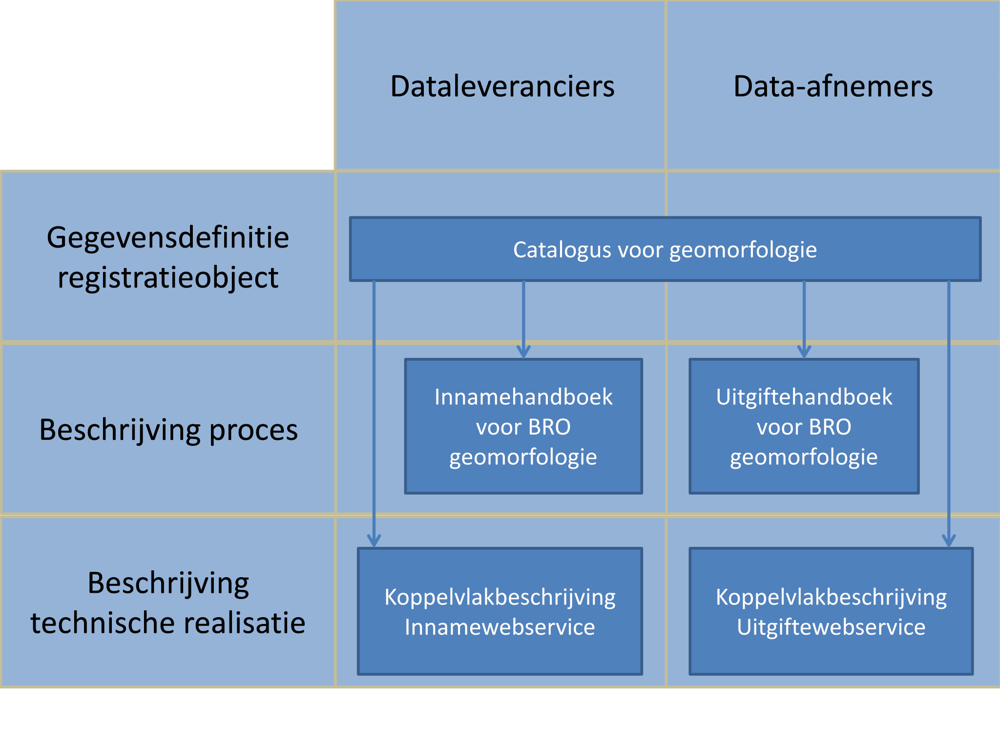
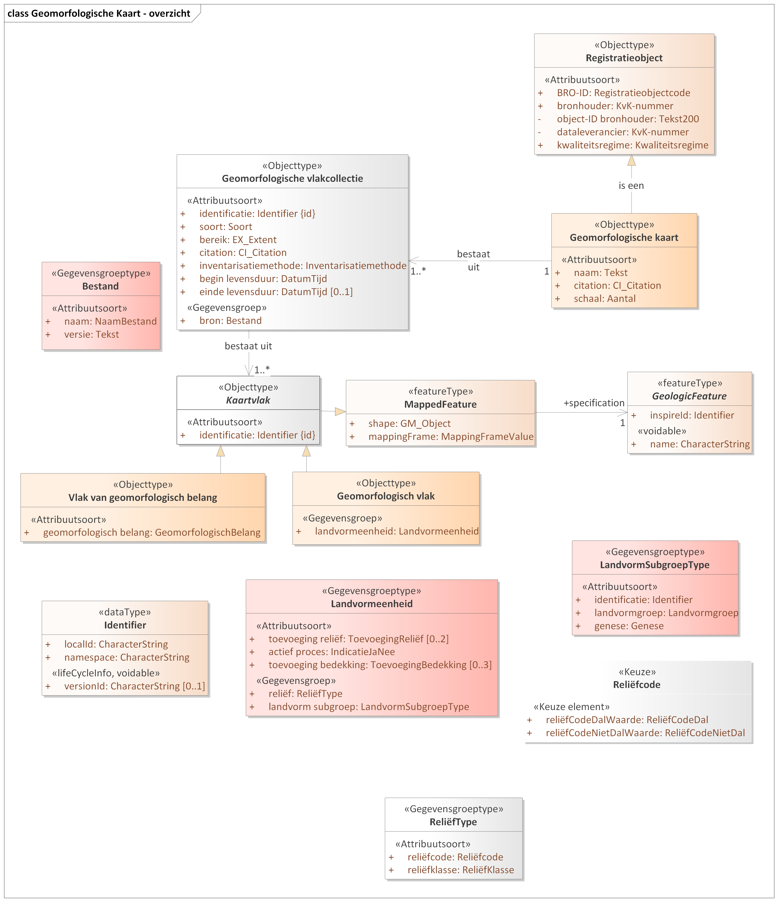

Creative Commons Attribution 4.0 International Public License (CC-BY)
Samenvatting
Status van dit document
Deze paragraaf beschrijft de status van dit document ten tijde van publicatie. Het is mogelijk dat er actuelere versies van dit document bestaan. Een lijst van Geonovum publicaties en de laatste gepubliceerde versie van dit document zijn te vinden op https://www.geonovum.nl/geo-standaarden/alle-standaarden.
Dit is een definitief concept van de nieuwe versie van het informatiemodel. Wijzigingen naar aanleiding van consultaties zijn doorgevoerd.
1. Inleiding
1.1 Doel en doelgroep
In de basisregistratie ondergrond (BRO) wordt een aantal typen gegevens geregistreerd, de registratieobjecten.
Een catalogus is de gegevensdefinitie van een registratieobject en beschrijft welke gegevens van het object in de BRO zijn opgeslagen.
Het document is bedoeld voor alle gebruikers van de BRO en moet duidelijk maken welke gegevens er precies in het systeem zitten.
Aan aanleverende partijen moet het vertellen welke gegevens in de basisregistratie ondergrond moeten komen en aan welke eisen die moeten
voldoen, en aan afnemende partijen welke gegevens zij in de basisregistratie ondergrond mogen verwachten.
Het document is voor een breed publiek bedoeld en de informatie moet naast precies ook begrijpelijk zijn.
1.2 Totstandkoming
Een catalogus is het resultaat van een proces van standaardisatie dat geruime tijd in beslag kan nemen. De standaardisatie is een open proces waarin de belanghebbende partijen actief betrokken worden. Het eindresultaat wordt door de wetgever vastgesteld in een ministeriële regeling.
In bepaalde gevallen is de verscheidenheid aan gegevens van een object zo groot, dat er eerst deelverzamelingen worden gedefinieerd. Het standaardisatieproces wordt dan per deelverzameling doorlopen. De deelverzamelingen worden zo gekozen dat de gegevens die in de bijbehorende catalogus worden beschreven, direct na vaststelling aan de BRO kunnen worden aangeleverd. Wanneer er deelverzamelingen worden onderscheiden, komt de catalogus van het registratieobject dus gefaseerd tot stand. Omdat inzichten in de loop van de tijd kunnen wijzigen kan het aan het eind van het hele proces nodig blijken revisies door te voeren om ongewenste verschillen tussen deelverzamelingen weg te nemen.
1.3 Beheer
Een vastgestelde catalogus (zoals op wetten.nl gepubliceerd) wordt met het daarbij horende deel van het systeem van de basisregistratie ondergrond in gebruik genomen. De eerste formeel vastgestelde catalogus (zoals op wetten.nl gepubliceerd) krijgt het versienummer 1.0. Verwacht mag worden dat er na enige tijd behoefte gaat ontstaan aan gegevens die nog niet in de catalogus zijn opgenomen.
De beheerder hanteert drie typen versies voor een wijziging van een standaard. Bijvoorbeeld: versie 2.1.0 (=X.Y.Z):
X-wijzigingen Deze wijzigingen veranderen de structuur van de standaard. Hierdoor zijn X-wijzigingen niet backwards compatible.
Frequentie: maximaal 1 keer per 2 jaar.
Y-wijzigingen Dit zijn wijzigingen die niet de structuur veranderen. Dit kunnen bijvoorbeeld updates zijn of inhoudelijke aanpassingen aan objecten, attributen of waardelijsten of de reikwijdte van de standaard. Deze wijzigingen zijn backwards compatible.
Frequentie: maximaal 1 keer per jaar.
Z-wijzigingen Dit zijn in feite oplossingen van fouten of verbeteringen van technische aard. Deze wijzigingen zijn backwards compatible.
Frequentie: maximaal 2 keer per jaar.
In een jaar waarin een X-wijziging plaats vindt zullen er op hetzelfde registratieobject geen y-wijzigingen plaatsvinden. Als er een X- of een Y-wijziging in een jaar aan de orde is, wordt er geen z-wijziging gepland.
De versie van de catalogus met inleiding (zoals hier gepubliceerd) volgt voor de normatieve stukken volledig de versie op wetten.nl. Wijzigingen aan niet normatieve teksten in dit document vallen altijd onder Z-wijzigingen en zullen maximaal 2 keer per jaar plaatsvinden.
Deze documenten hangen samen zoals hieronder afgebeeld.

Figuur 1Samenhang tussen documentatie
Het Ministerie van Landbouw, Natuur en Voedselkwaliteit (LNV) is de bronhouder,
en Wageningen Environmental Research (WENR) is de dataleverancier van het
geomorfologische kaart model (GMM).
1.4 Leeswijzer
Hoofdstuk 1 geeft het doel en de doelgroep van een catalogus.
Hoofdstuk 2 behandelt enkele algemene aspecten van het BRO-systeem en begrippen van algemene aard.
Hoofdstuk 3 plaatst het object in de gegevenssystematiek van de basisregistratie ondergrond en vertelt wat de benadering is geweest bij het opstellen van de gegevensdefinitie.
Hoofdstuk 4 vertelt hoe de catalogus is opgebouwd en welke aspecten van de gegevens daarin worden beschreven.
2. Algemene kenmerken en begrippen
2.1 Opzet van de landelijke voorziening
De landelijke voorziening van de basisregistratie ondergrond is een systeem dat een schakel vormt in een informatieketen. Aan het begin van de keten staan bestuursorganen die opdracht geven tot de productie van gegevens, of zelf gegevens produceren. Die bestuursorganen worden bronhouders genoemd. De geproduceerde gegevens worden door een dataleverancier geleverd aan de beheerder van het systeem, de registerbeheerder. De bronhouder is verantwoordelijk voor de levering van gegevens. Hij kan besluiten zelf dataleverancier te zijn of andere partijen een machtiging voor levering te verlenen. De beheerder van de landelijke voorziening van de BRO registreert de aangeleverde gegevens en levert ze voor (her)gebruik door aan allerlei afnemers.
De opzet van het systeem moet begrepen worden vanuit de verantwoordelijkheden die in de keten zijn belegd. De aangeleverde gegevens vallen onder de verantwoordelijkheid van de bronhouder en de registerbeheerder mag die gegevens niet veranderen. De registerbeheerder moet echter wel gegevens toevoegen om het systeem te kunnen beheren en hij kan gegevens toevoegen om de afnemers goed van dienst te kunnen zijn.
Bij wet is geregeld dat de basisregistratie ondergrond zo wordt opgezet dat er onderscheid bestaat tussen de gegevens die aan de registerbeheerder zijn aangeleverd en de gegevens die de registerbeheerder aan de afnemers verstrekt. Het systeem valt uiteen in twee grote deelsystemen, het register brondocumenten ondergrond en de registratie
ondergrond (Figuur 2).
Een geheel van gegevens dat door of onder verantwoordelijkheid van een bronhouder wordt aangeleverd, wordt een brondocument genoemd. De brondocumenten worden in het register brondocumenten ondergrond opgeslagen. De gegevens uit de brondocumenten worden samen met de gegevens die de registerbeheerder toevoegt in de registratie ondergrond vastgelegd. De registratie ondergrond is het deelsysteem dat gebruikt wordt voor uitgifte.
Figuur 2De twee grote deelsystemen van de landelijke voorziening van de BRO.
Met deze opzet verkrijgt het systeem de nodige flexibiliteit. Zo kan een object in de registratie ondergrond gegevens bevatten die uit meer dan één brondocument afkomstig zijn en bij uitgifte kunnen gegevens van verschillende objecten met elkaar gecombineerd worden. Ook is het mogelijk met het brondocument gegevens op te slaan die alleen voor de bronhouder en de aanleverende partij van belang zijn.
De catalogus dekt alle gegevens die opgenomen zijn in de registratie ondergrond. Verreweg de meeste gegevens komen uit de brondocumenten die de dataleverancier aanlevert en een paar gegevens komen voort uit de overdracht van een brondocument aan de registerbeheerder. Aan de aangeleverde gegevens worden enkele gegevens door de registerbeheerder toegevoegd. Als een gegeven is toegevoegd door de BRO wordt dat in de beschrijving expliciet vermeld.
Alle gegevens in de registratie ondergrond worden uitgegeven, maar niet alle afnemers kunnen alle gegevens geleverd krijgen. De gegevens die niet aan alle afnemers worden uitgeleverd zijn de gegevens die alleen nodig zijn in de communicatie tussen de registerbeheerder enerzijds en de dataleveranciers en bronhouders anderzijds.
2.2 Registratieobject
Het registratieobject is dé eenheid in de data-architectuur van de basisregistratie ondergrond. Voor de registerbeheerder is het de elementaire bouwsteen van het systeem dat hij moet beheren.
Een registratieobject verwijst naar een eenheid van informatie die onder de verantwoordelijkheid van één bronhouder valt en die met een bepaald doel is of wordt gemaakt. Het is in directe of indirecte zin gedefinieerd in de ruimte en dat wil zeggen dat een registratieobject een plaats op het aardoppervlak heeft of dat het gekoppeld is aan een ander type registratieobject met een plaats op het aardoppervlak.
Een registratieobject is niet alleen in de ruimte maar ook in de tijd gedefinieerd. Het leven van een registratieobject begint op het moment dat de gegevens zijn geregistreerd en dat is zo kort mogelijk nadat de gegevens zijn geproduceerd. De levensduur van een registratieobject, en de veranderlijkheid van de gegevens verschilt van object tot object. Een grondwatermonitoringput kan tientallen jaren gebruikt worden voor het meten van grondwaterstanden en in de periode kunnen er nieuwe gegevens ontstaan. Dat betekent dat de gegevens van de put in de registratie ondergrond gedurende zijn hele levensduur bijgewerkt moeten kunnen worden. Aan de andere kant van het spectrum staan de objecten waarvan alle gegevens in een keer worden vastgelegd. Geotechnisch sondeeronderzoek is daar een voorbeeld van. Sondeeronderzoek is eenmalig onderzoek en het resultaat ervan kan al na een of enkele dagen aan de bronhouder worden overhandigd.
2.3 Registratiedomein
Registratieobjecten worden in de basisregistratie ondergrond gegroepeerd in domeinen. Vooralsnog worden zes domeinen onderscheiden:
bodem- en grondonderzoek
bodemkwaliteit
grondwatermonitoring
grondwatergebruik
mijnbouwwet
modellen.
De domeinen zijn vanuit het oogpunt van beheer van belang voor de ordening van het systeem. Daarnaast zijn zij nuttig in de communicatie met de partijen die bij de realisatie van het systeem betrokken zijn.
2.4 Kwaliteitsregime
In de basisregistratie ondergrond worden niet alleen gegevens geregistreerd die dateren van na de datum waarop de wet van kracht is geworden. Ook oudere gegevens zullen in de basisregistratie ondergrond worden opgenomen. De noodzaak daartoe ligt in de wet verankerd. Die schrijft voor dat de gegevens uit de eerder bestaande systemen DINO en BIS zo veel mogelijk naar de BRO moeten worden overgezet. Verder staat de wet toe dat bronhouders tot vijf jaar na de inwerkingtreding van de wet historische gegevens ter registratie mogen aanbieden.
Historische gegevens kunnen niet altijd voldoen aan de strikte regels die de BRO stelt. Zo kan het voorkomen dat voor gegevens die volgens de strikte regels van de BRO verplicht zijn, geen waarde bekend is. Om de verwerking van de twee categorieën gegevens naast elkaar mogelijk te maken, worden twee kwaliteitsregimes gehanteerd. Voor de aanlevering van gegevens volgens de strikte regels geldt het IMBRO-regime. Bij de aanlevering van historische gegevens wordt geaccepteerd dat een aantal formeel verplichte gegevens geen waarde heeft. Voor deze gegevens wordt het IMBRO/A-regime gehanteerd en dat kent dus minder strikte regels.
De introductie van de twee kwaliteitsregimes geeft de bronhouder gedurende een bepaalde periode een zekere mate van vrijheid. Het kan bijvoorbeeld praktisch blijken het IMBRO/A-regime te hanteren voor gegevens die weliswaar pas na de datum waarop de wet in werking is getreden zijn geproduceerd maar die voortkomen uit opdrachten die al voor die datum zijn gegeven. Ook kan het voorkomen dat historische gegevens wel aan alle strikte voorwaarden voldoen en dan is het wenselijk de gegevens onder IMBRO-regime aan te leveren.
De periode waarin de bronhouders die vrijheid hebben wordt de transitieperiode genoemd. Over de duur van de transitieperiode zijn nog geen afspraken gemaakt. Na afloop van de transitieperiode kan alleen onder het strikte IMBRO-regime worden aangeleverd.
2.5 Formele en materiële geschiedenis
De basisregistratie ondergrond maakt deel uit van een stelsel van basisregistraties. Binnen het stelsel maakt men onderscheid tussen de materiële geschiedenis en de formele geschiedenis van een object.
Het begrip materiële geschiedenis wordt gebruikt om de veranderingen van eigenschappen van een object in de werkelijkheid aan te duiden. De materiële geschiedenis van een object wordt, voor zover relevant, in de registratie ondergrond vastgelegd. Niet alle registratieobjecten hebben een materiële geschiedenis, alleen de objecten met een levensduur, zoals de grondwatermonitoringput.
Het begrip formele geschiedenis wordt gebruikt voor de veranderingen van eigenschappen van een object in de registratie zelf. De meeste van die veranderingen gaan terug op een verandering van eigenschappen in de werkelijkheid, en de formele geschiedenis geeft aan wanneer de veranderingen in het systeem geregistreerd zijn. De formele geschiedenis kent ook gebeurtenissen die niet het gevolg zijn van een verandering in de werkelijke eigenschappen van een object. Die gebeurtenissen hebben betrekking op correcties. Het kan gebeuren dat een bronhouder erachter komt dat er een onjuiste waarde was geregistreerd en dan zorgt hij ervoor dat die verbeterd wordt. De registratie van de verbetering is een formele gebeurtenis.
Alle registratieobjecten hebben een formele geschiedenis en die wordt in de registratie ondergrond globaal vastgelegd in de registratiegeschiedenis van het object. Globaal wil zeggen dat de registratie ondergrond alleen een overzicht van de formele geschiedenis geeft. Voor de details moet het register brondocumenten ondergrond worden geraadpleegd.
Bij correctie wordt het betreffende gegeven in de registratie ondergrond overschreven en is de oude waarde van het gegeven niet meer direct beschikbaar voor de afnemers.
Zou een afnemer toch willen weten wat de eerdere foute waarde was, dan moet hij het register brondocumenten ondergrond raadplegen.
2.6 Coördinaten en referentiestelsels
De registratieobjecten van de basisregistratie ondergrond zijn gedefinieerd in de ruimte en dat wil zeggen dat een object zelf een plaats op het aardoppervlak, een locatie, heeft, of dat het gekoppeld is aan een ander type registratieobject met een locatie. Afhankelijk van het type registratieobject, wordt de locatie geregistreerd als een punt, een lijn of een vlak.
De locatie is de horizontale positie van een object. Voor bepaalde objecten is het voldoende dat alleen die horizontale positie wordt vastgelegd, maar voor veel objecten is ook de verticale positie van belang.
Posities worden vastgelegd in coördinaten en die zijn gedefinieerd in een bepaald referentiestelsel.
Er zijn verschillende typen referentiestelsels. Zo spreekt men van horizontale referentiestelsels (2D), verticale referentiestelsels (1D), gecombineerde referentiestelsels (2D, 1D) en werkelijke 3D referentiestelsels. In Nederland worden de horizontale en de verticale component van een positie in een afzonderlijk stelsel uitgedrukt. Het is vandaag de dag mogelijk met gps een positie in een 3D-referentiestelsel vast te leggen, maar de wens over te stappen op het gebruik van 3D is nog door geen van de partijen die betrokken zijn bij de basisregistratie ondergrond naar voren gebracht.
2.6.1 Referentiestelsels voor de horizontale positie
In Nederland zijn traditioneel verschillende referentiestelsels voor de horizontale positie in gebruik. In 2009, bij de eerste voorbereidingen voor de totstandkoming van de basisregistratie ondergrond, is al vastgesteld dat de verscheidenheid aan referentiestelsels de basisregistratie ondergrond voor problemen stelt omdat de registratie dan niet gemakkelijk op een eenduidige manier bevraagd kan worden. In de registratie ondergrond worden namelijk zowel gegevens met een locatie op land als gegevens met een locatie op zee geregistreerd. In de toenmalige praktijk werden op land en op zee verschillende stelsels gebruikt. Op land werd RD gebruikt en op zee waren verschillende stelsels in gebruik, waarvan WGS84 de belangrijkste was.
In 2009 was ook al bekend dat de Europese kaderrichtlijn INSPIRE de lidstaten vraagt de gegevens in Europa in één referentiestelsel uit te gaan wisselen, te weten in ETRS89. Met dat in gedachten, is het besluit genomen het BRO-systeem zo in te richten dat de registratie bevraagd gaat worden in ETRS89.
Het besluit wordt ondersteund door ontwikkelingen in Nederland. Sinds 2013 wordt er door de drie belangrijkste autoriteiten in Nederland op het gebied van referentiestelsels, het Kadaster, de Dienst der Hydrografie en Rijkswaterstaat, gewerkt aan de totstandkoming van nieuwe afspraken. Die afspraken moeten in lijn zijn met Europese afspraken en leiden tot heldere en eenduidige transformatieprocedures tussen referentiestelsels. Concreet betekent dit dat in Nederland op termijn het ETRS89-stelsel als standaard zal worden gehanteerd voor het uitwisselen van geo-informatie.
Het besluit betekent niet dat de gegevens ook in ETRS89 aangeleverd moeten worden. De basisregistratie ondergrond voorziet een periode van transitie waarin de aanleverende partijen zelf bepalen wanneer zij overstappen op ETRS89. Die periode zal naar verwachting jaren duren. Om de transitie te ondersteunen hanteert de basisregistratie ondergrond de volgende spelregels:
Gegevens mogen in een beperkt aantal referentiestelsels worden aangeleverd (RD, WGS84 en ETRS89).
Voor locaties op land wordt alleen RD of ETRS89 toegestaan.
Voor locaties op zee wordt alleen WGS84 of ETRS89 toegestaan.
De aangeleverde coördinaten worden in de registratie opgeslagen.
De aangeleverde coördinaten worden door de basisregistratie ondergrond getransformeerd naar
het ETRS89 referentiestelsel.
De getransformeerde coördinaten worden naast de aangeleverde coördinaten opgeslagen.
Bij de getransformeerde coördinaten wordt ook een identificatie van de gebruikte transformatiemethode opgeslagen.
Als de coördinaten in ETRS89 zijn aangeleverd, dan staat bij aangeleverde en getransformeerde positie dezelfde
informatie. Voor de locatie worden de getransformeerde coördinaten en de aangeleverde coördinaten beide
aan de afnemers verstrekt.
2.6.2 Referentiestelsels voor de verticale positie
In Nederland zijn voor verticale posities op land en zee verschillende referentiestelsels in gebruik. Op land wordt NAP gebruikt. Op zee is het in de voor de BRO relevante werkvelden gebruikelijk posities uit te drukken t.o.v. het gemiddeld zeeniveau (MSL, Mean Sea Level), maar posities t.o.v. LAT komen ook voor (Lowest Astronomical Tide). Dit laatstgenoemde stelsel wordt in de kaderrichtlijn INSPIRE genoemd als het stelsel van voorkeur voor het uitdrukken van verticale posities op zee. De basisregistratie ondergrond staat daarom op zee het gebruik van LAT naast MSL toe. Aangeleverde verticale posities worden door de BRO niet getransformeerd.
2.7 Gegevens op land en op zee
De basisregistratie ondergrond bevat gegevens over de ondergrond van Nederland en zijn zgn. Exclusieve Economische Zone (EEZ). De EEZ is het gebied op de Noordzee waar Nederland economische rechten heeft. Voor de referentiestelsels die bij aanlevering worden toegestaan, is het van belang te weten of de locatie van een object op zee of op land ligt.
Als scheidingslijn tussen land en zee wordt in de basisregistratie ondergrond de UNCLOS-basislijn gehanteerd. Het beheer van de basislijn valt onder de verantwoordelijkheid van de Dienst der Hydrografie van het ministerie van Defensie. Deze dienst voert die taak uit op basis van het Zeerechtverdrag van de Verenigde Naties uit 1982, dat in het Engels de United Nations Convention on the Law of the Sea (UNCLOS) heet.
De basislijn is opgebouwd uit de nulmeterdieptelijn zoals weergegeven op de zeekaarten en enkele rechte basislijnen die onder meer de monding van de Westerschelde en de wateren tussen de Waddeneilanden afsluiten.
De grens tussen land en zee is veranderlijk. De Dienst der Hydrografie stelt de grens opnieuw vast wanneer daartoe voldoende aanleiding is. De BRO hanteert bij inname de meest recente versie van de UNCLOS-basislijn en controleert daarmee of de juiste referentiestelsels gebruikt worden.
Tussen het moment waarop de locatie van een object wordt bepaald en het moment waarop het gegeven in de basisregistratie ondergrond wordt vastgelegd verloopt enige tijd. In die periode kan de positie van de UNCLOS-basislijn opnieuw zijn vastgesteld, en dan ontstaat er een discrepantie die bij het aanleveren van gegevens tot problemen kan leiden. Wanneer een dergelijk probleem zich voordoet, wordt de dataleverancier gevraagd contact op te nemen met de registratiebeheerder om gezamenlijk tot een oplossing te komen.
Een soortgelijk probleem doet zich voor met betrekking tot de begrenzing van Nederland, met name van het Nederlands territoir. De grenzen van Nederland worden ieder jaar op 1 januari vastgesteld door het Kadaster en vastgelegd in de basisregistratie kadaster. De BRO controleert bij inname of een object in het gebied ligt dat Nederland en zijn Exclusieve Economische Zone omvat, en hanteert daarbij de actuele grenzen. Ook bij problemen die te herleiden zijn tot een verandering in de begrenzing van Nederland, wordt de dataleverancier gevraagd contact op te nemen met de registratiebeheerder om gezamenlijk tot een oplossing te komen.
Binnen het domein Mijnbouwwet wordt de scheidingslijn tussen land en zee niet bepaald door de UNCLOS-basislijn, maar door een over zee lopende lijn die is vastgelegd in een bijlage bij de Mijnbouwwet. In de registratie ondergrond wordt deze lijn aangeduid als mijnbouwgrens. Voor de referentiestelsels die bij aanlevering worden toegestaan, is het binnen het domein Mijnbouwwet van belang te weten of de locatie van een object aan landzijde of aan zeezijde van de mijnbouwgrens ligt. Waar in voorgaande paragrafen ‘op land’ en ‘op zee’ is genoemd, houdt dat binnen het domein Mijnbouwwet in: aan landzijde respectievelijk aan zeezijde van de mijnbouwgrens.
2.8 Nauwkeurigheid van meetwaarden
Voor zinvol gebruik van gegevens met een gemeten, berekende of anderszins bepaalde waarde is het noodzakelijk dat de nauwkeurigheid van die gegevens bekend is.
Het begrip nauwkeurigheid laat zich in deze context het best omschrijven als de juistheid van een gemeten of berekende waarde. In de meeste processen waarin de waarde van een gegeven wordt bepaald, kan de afwijking van de daadwerkelijke waarde slechts via een kalibratie- of statistisch proces worden verkregen. Het resultaat omvat dan niet alleen een van de mogelijke realisaties van een meetwaarde maar ook informatie over de mogelijke spreiding van de meetwaarden.
De basisregistratie ondergrond gaat ervan uit dat de producenten van gegevens de metingen en berekeningen uitvoeren binnen een stelsel van afspraken dat binnen het desbetreffende werkveld is vastgelegd. Uitgangspunt is dat ook de eisen waaraan de gegevens op het gebied van nauwkeurigheid moeten voldoen in afspraken zijn vastgelegd. Dat kunnen praktische werkafspraken zijn, maar ook afspraken die vertaald zijn naar ISO- en NEN-normen. In de catalogus wordt in beginsel verwezen naar die normen. Waar deze normen niet voorzien in afspraken over de nauwkeurigheid, stelt de basisregistratie ondergrond hieraan specifieke eisen. Deze zijn dan vermeld in de catalogus.
2.9 Authentiek gegeven
In de wet is een aantal gegevens expliciet als authentiek aangeduid. Dit wordt in de catalogus nader uitgewerkt; verreweg de meeste gegevens zijn authentiek.
Met de aanduiding authentiek wordt, zoals geformuleerd in de memorie van toelichting op de wet, tot uitdrukking gebracht dat:
Het gegeven in samenhang met andere gegevens door een groot aantal bestuursorganen in verschillende processen wordt gebruikt en derhalve bestemd is voor informatie-uitwisseling tussen bestuursorganen;
de verantwoordelijkheid voor betrouwbaarheid van het gegeven eenduidig geregeld is;
het gegeven onderworpen is aan intern en extern kwaliteitsonderzoek, en
het gegeven zich leent voor verplicht gebruik door bestuursorganen en eenmalige verstrekking door burgers en bedrijven aan de overheid.
In de praktijk mag een gebruiker van de gegevens ervan uitgaan dat alle gegevens correct zijn. De catalogus moet de gebruiker alle informatie geven die voor een goed begrip daarvan nodig is.
Heeft een gebruiker echter gerede twijfel over de juistheid van een authentiek gegeven dan wordt verwacht dat hij de registerbeheerder daarvan op de hoogte brengt. Bestuursorganen zijn, bij gerede twijfel over de juistheid van een authentiek gegeven (of het ontbreken ervan), zelfs verplicht daarvan melding te maken.
Voor alle gegevens is aangegeven of ze authentiek zijn. Ook is voor alle gegevens aangegeven of ze aanwezig moeten zijn en een waarde moeten hebben. Dat laat zien dat er gegevens kunnen zijn die authentiek zijn maar geen waarde hoeven te hebben. Juist omdat er verplichtingen gelden t.a.v. authentieke gegevens, vraagt dit om een korte toelichting.
Wanneer een authentiek gegeven geen waarde heeft moet de gebruiker ervan uitgaan dat het gegeven niet is geproduceerd. Dat geval kan zich uiteraard alleen voordoen wanneer er vrijheid van beslissen bestaat bij de bronhouder of de producent.
Voor de duidelijkheid, als er wel een waarde is dan moet die ook in de BRO worden opgenomen. Bij gerede twijfel over het ontbreken van een waarde, moet een bestuursorgaan dat melden.
3. Introductie van de gegevensdefinitie
3.1 De gegevensdefinitie
De gegevensdefinitie vormt het hart van de catalogus en geeft een beschrijving van alle gegevens van het registratieobject. Eerst wordt de definitie van het registratieobject gegeven inclusief de plaatjes van het zgn. domeinmodel, en vervolgens de definities van de entiteiten waaruit het object is opgebouwd met de eigenschappen van die entiteiten, de attributen. De entiteiten worden op volgorde van de nummers in het domeinmodel behandeld. De volgende aspecten van de gegevens worden vastgelegd:
De Nederlandse naam van het gegeven.
Of het gegeven van het type entiteit of het type attribuut is, met in het laatste geval van welke entiteit het een attribuut is.
Eventueel de herkomst van het gegeven, in het uitzonderlijke geval de herkomst anders is dan de BRO.
De definitie van het gegeven.
Eventueel de herkomst van de definitie, in het uitzonderlijke geval de definitie een andere herkomst heeft dan de BRO.
De kardinaliteit van een attribuut, en dat geeft aan hoe vaak het attribuut voorkomt.
De aanduiding of een attribuut al dan niet authentiek is (juridische status).
De naam van het domein voor de waarden van het attribuut, met afhankelijk van het type domein nadere informatie over de waarden.
Eventueel de naam van het domein van het attribuut voor IMBRO/A, wanneer het uitzonderlijke geval zich voordoet dat er voor IMBRO/A een ander domein geldt dan voor IMBRO.
Eventueel de regels die in aanvulling op de kardinaliteit en de bepalingen van het domein gelden en door de basisregistratie ondergrond in controles zijn opgenomen, bijvoorbeeld om de consistentie van de inhoud van een brondocument vast te stellen.
Eventueel de regels die voor IMBRO/A gelden, wanneer het uitzonderlijke geval zich voordoet dat er voor IMBRO/A aanvullende regels gelden.
Eventueel de aanduiding dat de waarde van het attribuut mag ontbreken, wanneer het uitzonderlijke geval zich voordoet dat de waarde van het attribuut mag ontbreken.
Van attributen waarvan de waarde mag ontbreken de omschrijving van de reden waarom de waarde mag ontbreken.
Eventueel de aanduiding dat het gegeven wordt afgeleid door de basisregistratie ondergrond, in het uitzonderlijke geval het gegeven wordt afgeleid.
Eventueel een toelichting om aanvullende informatie te geven over de betekenis van het gegeven of de reden waarom het is opgenomen.
Van attributen van objecten met een materiële geschiedenis de aanduiding of het attribuut al dan niet een materiële geschiedenis kan hebben.
De gegevensdefinitie dekt de beide kwaliteitsregimes die worden onderscheiden, IMBRO en IMBRO/A. Het kwaliteitsregime IMBRO is leidend en bij het opstellen van de gegevensdefinitie is geprobeerd de verschillen tussen de twee regimes zo klein te houden. Het streven is een object altijd in termen van dezelfde gegevens te beschrijven en voor IMBRO/A alleen aanvullende regels te formuleren en extra waarden toe te staan. Bij uitzondering kan het echter nodig zijn gebleken voor IMBRO/A aparte entiteiten, attributen of domeinen te definiëren.
3.2 Domeinen
Een domein beschrijft welke waarden een attribuut mag hebben. Domeinen zijn van een bepaald type en de typen die in de catalogus worden gebruikt worden hieronder toegelicht. Sommige domeinen zijn samengesteld en die worden als laatste besproken.
3.2.1 Aantal
Het domein Aantal wordt gebruikt voor een telbare hoeveelheid. Het is een natuurlijk getal met een bepaalde maximale lengte.
Het domein wordt volledig gespecificeerd door met de aanduiding aantal ook de maximale lengte mee te (Aantal N). Gewoonlijk wordt de waardeverzameling verder ingeperkt door een bereik te specificeren. In het domeinmodel wordt volstaan met de algemene aanduiding Aantal.
3.2.2 Code
Een code is een opeenvolging van cijfers, van letters of van cijfers en letters met een bepaalde opbouw en met een specifieke betekenis. Een code heeft gewoonlijk een betekenis die ook buiten de basisregistratie ondergrond geldt. Een code wordt uitgegeven door een verantwoordelijke instantie. Om de opbouw van een code weer te geven wordt gebruik gemaakt van de letters C en N. De letter C staat voor character (Eng.) en duidt een letter aan, de letter N staat voor number (Eng.) en duidt een cijfer aan. Een code heeft een bepaalde naam.
Het domein wordt volledig gespecificeerd door met de naam van de code ook de opbouw mee te geven. Uit de definitie van het attribuut zelf moet blijken wat de specifieke betekenis is van de code. In het domeinmodel wordt het domein aangeduid met zijn naam.
3.2.3 Tijdstip
Voor gegevens die over tijdstippen gaan worden twee domeinen gebruikt. Een voor een tijdstip tot op de seconde nauwkeurig (DatumTijd) en een voor een tijdstip tot op de dag nauwkeurig (Datum).
In ieder domein gaat het om de datum gemeten volgens de Gregoriaanse kalender. Bij het domein DatumTijd wordt de tijd gemeten volgens UTC en moet de tijdzone worden meegegeven. UTC is de mondiaal geaccepteerde standaardtijd en de opvolger van GMT (Greenwich Mean Time); de drie letters staan voor Coordinated Universal Time. Door de tijdzone mee te geven kan lokale tijd worden omgezet naar UTC.
De opbouw van de twee domeinen volgt dezelfde conventies, conform ISO 8601. Het eerste element in de opbouw staat voor het jaar, dan volgt de maand, enz., en het laatste element staat voor de tijdzone. Om de verschillende elementen aan te geven worden letters gebruikt: jaar (J), maand (M), dag (D), uur (U), minuut (M)en seconde (S), gevolgd door de tijdzone. Het aantal letters geeft de lengte aan.
Voor de meest uitgebreide variant van de opbouw, die van DatumTijd, wordt dit JJJJ-MM-DDTUU:MM:SS+UU:MM. De T is het teken dat de datum en het tijdstip op die datum scheidt. De + is het scheidingteken tussen het tijdstip en de tijdzone. Zoals uit de opbouw blijkt wordt de tijdzone in uren en minuten gegeven. De meeste tijdzones zijn overigens uitgedrukt in gehele uren (UU:00). In Nederland geldt Centraal Europese Tijd (UTC+1:00) of Centraal Europese Zomertijd (UTC+2.00).
3.2.3.1 Datum
Het domein Datum wordt gebruikt om een datum volgens de Gregoriaanse kalender tot op de dag nauwkeurig aan te geven. De opbouw is JJJJ-MM-DD.
Bij het domein Datum is het voldoende de naam te geven, omdat de opbouw altijd hetzelfde is. Gewoonlijk wordt de waardeverzameling verder ingeperkt door een bereik te specificeren.
3.2.3.2 DatumTijd
Het domein DatumTijd wordt gebruikt om een tijdstip volgens de Gregoriaanse kalender tot op de seconde nauwkeurig aan te geven. De opbouw is JJJJ-MM-DDTUU:MM:SS+UU:MM.
Bij het domein DatumTijd is het voldoende de naam te geven, omdat de opbouw altijd hetzelfde is. Gewoonlijk wordt de waardeverzameling verder ingeperkt door een bereik te specificeren.
3.2.3.3 OnvolledigeDatum
Voor gegevens die onder het kwaliteitsregime IMBRO/A aangeleverd worden, geldt een derde domein met vier keuzemogelijkheden.
De datum tot op de dag nauwkeurig, met als opbouw JJJJ-MM-DD
De datum tot op de maand nauwkeurig, met als opbouw JJJJ-MM
De datum tot op het jaar nauwkeurig, met als opbouw JJJJ
Geen datum bekend, met als vaste waarde onbekend.
De keuze die gemaakt wordt is gebaseerd op de beschikbaarheid van gegevens. De gebruiker moet ervan uit gaan dat de informatie zo nauwkeurig mogelijk is opgenomen. Bij het domein OnvolledigeDatum is het voldoende de naam te geven, omdat de vier keuzen en de opbouw altijd hetzelfde zijn.
3.2.4 Meetwaarde
Het domein Meetwaarde wordt gebruikt wanneer de nauwkeurigheid van de waarde altijd hetzelfde is.
Het is een rationaal getal met een bepaalde opbouw. Het aantal cijfers voor het scheidingsteken is variabel maar begrensd. Het aantal cijfers achter het scheidingsteken ligt vast.
Het domein wordt volledig gespecificeerd door met de aanduiding meetwaarde ook de opbouw (Meetwaarde N.N) en de eenheid mee te geven. Gewoonlijk wordt de waardeverzameling verder ingeperkt door een bereik te specificeren. In het domeinmodel wordt volstaan met de algemene aanduiding Meetwaarde.
3.2.5 Tekst
Het domein Tekst bestaat uit een stuk tekst van een bepaalde maximale lengte. De tekst mag alleen bestaan uit de tekens die voorkomen in de MES-1 set. De MES-1 set omvat 335 tekens en wordt gebruikt binnen de landen van de Europese Unie die een Latijns schrift kennen.
Het domein wordt volledig gespecificeerd door met de aanduiding tekst ook de maximale lengte mee te (Tekst N). In het domeinmodel wordt volstaan met de algemene aanduiding Tekst.
3.2.6 Waardelijst niet-uitbreidbaar
Een niet-uitbreidbare waardelijst wordt gebruikt wanneer uitbreiding niet mogelijk is. Alle waarden van de lijst staan vast.
Bij een niet-uitbreidbare waardelijst is het voldoende de naam te geven, omdat de inhoud altijd hetzelfde is. In de basisregistratie ondergrond worden drie niet-uitbreidbare waardelijsten gebruikt.
IndicatieJaNee
Waarde
ja
nee
IndicatieJaNeeOnbekend
Waarde
ja
nee
onbekend
Kwaliteitsregime
Waarde
IMBRO
IMBRO/A
3.2.7 Waardelijst uitbreidbaar
Een uitbreidbare waardelijst wordt gebruikt wanneer uitbreiding mogelijk moet zijn. Iedere waarde van de lijst heeft een specifieke betekenis (omschrijving) en geldt voor een bepaald kwaliteitsregime, IMBRO en/of IMBRO/A. Eventueel worden andere aspecten van de waarde vastgelegd.
Bij een uitbreidbare waardelijst wordt de naam van de lijst geven. De inhoud van de lijst is in een apart hoofdstuk van de gegevensdefinitie opgenomen.
3.2.8 Organisatie
Het domein Organisatie wordt gebruikt om de organisaties die een rol hebben in de basisregistratie ondergrond te identificeren. De invulling van het domein hangt af van waar de organisatie gevestigd is en voor de basisregistratie ondergrond gaat het daarbij om Nederland of een andere lidstaat van de Europese Unie.
In het geval de organisatie in Nederland gevestigd is, wordt het domein ingevuld met het gegeven dat een onderneming of de maatschappelijke activiteit van een rechtspersoon in het Handelsregister identificeert, het KvK-nummer. Het KvK-nummer is van het type code en de opbouw is NNNNNNNN.
Voor organisaties buiten Nederland wordt het domein ingevuld met het equivalent van het KvK-nummer in een handelsregister van een andere lidstaat van de Europese Unie dan Nederland, het EuropeesHandelsnummer. Het Europees handelsnummer, de zogenaamde EUID, is geïntroduceerd ten behoeve van de koppeling van handelsregisters. De code is gebaseerd op ISO 6523 en is opgebouwd uit een landcode, registeridentificatiecode, inschrijvingsnummer en controlegetal. De landcode is de 2-letterige code van ISO3166, de registeridentificatiecode is de identificatie van het nationale register omdat in sommige landen meerdere handelsregisters bestaan en het inschrijvingsnummer is het nummer waaronder de onderneming is ingeschreven in het betreffende register. Het controlegetal ter voorkomen van identificatiefouten wordt nog niet gebruikt. De opbouw per element is variabel en daarom is het Europees Handelsnummer in de BRO als domein Tekst 40 opgenomen.
Bij het domein Organisatie is het voldoende de naam te geven, omdat de twee keuzen en de opbouw altijd hetzelfde zijn.
3.3 Het domeinmodel
Het domeinmodel geeft een overzicht van de gegevens van het registratieobject en laat de onderlinge samenhang zien. Modellering van informatie kent verschillende invalshoeken. In de catalogus is het inhoudelijke perspectief gekozen omdat dat de meeste waarde heeft voor de mensen die de informatie moeten begrijpen. Een dergelijk model wordt in de basisregistratie ondergrond een domeinmodel genoemd. Uit het domeinmodel wordt een technisch model afgeleid dat meeweegt dat informatiesystemen efficiënt met elkaar moeten kunnen spreken. Voor het domeinmodel wordt de UML-notatie gebruikt. Met kennis van de gebruikte symbolen is het gemakkelijk te lezen.
Het domeinmodel kent een aantal vaste elementen die bij ieder registratieobject terugkomen. Een begrip van deze elementen vergroot de leesbaarheid van het domeinmodel en de catalogus. De elementen zijn: entiteiten, attributen, gegevensgroepen en relaties. Een entiteit is een onderscheidend geheel van eigenschappen die gezamenlijk betekenis hebben. Een entiteit heeft altijd een naam en een definitie. In het domeinmodel zijn de entiteiten te herkennen aan het begrip Objecttype.
In de entiteiten staan de namen opgesomd van de attributen, de eigenschappen van de entiteiten, met daarachter de naam van de bijbehorende waardenverzameling (domein) en de kardinaliteit. Bij attributen is de kardinaliteit alleen opgenomen wanneer die ongelijk is aan 1. Overigens moet de kardinaliteit altijd in samenhang met de regels die in de definitie van het gegeven zijn opgenomen worden begrepen. De kardinaliteit en de regels bepalen samen of een gegeven al dan niet aanwezig is. De figuren laten ook zien welke attributen alleen aan de dataleverancier en de bronhouder worden uitgeleverd. In het domeinmodel zijn de attributen te herkennen aan het begrip Attribuutsoort.
Soms zijn een aantal attributen gegroepeerd in een groep, aangeduid als gegevensgroep. Het blijven attributen van de entiteit, maar de inhoudelijke definiëring van de gegevensgroep staat elders. Gegevensgroepen kunnen bij meerdere entiteiten terugkomen.
Het domeinmodel laat daarnaast ook zien hoe entiteiten aan elkaar gerelateerd zijn. Een beschrijving van deze relatie is opgenomen bij de bron-entiteit van de relatie. Een relatie heeft altijd een richting en in de meeste gevallen loopt deze van bron naar doel. In het plaatje van een domeinmodel heeft de relatie een naam en een kardinaliteit. Om de leesbaarheid te vergroten staat de kardinaliteit bij de doelentiteit.
Bovenstaand voorbeeld is te lezen als: de entiteit Bepaling bevat één of meerdere metingen. Een meting bestaat uit een meetwaarde en meetconfiguratie-gegevens. De meetconfiguratie bestaat uit twee parameters.
3.4 Verplichte gegevens, verplichte waarden
De kardinaliteit en de regels bepalen samen of een gegeven
al dan niet aanwezig is. Voor een goed begrip van de
gegevensdefinitie is dat nog niet zorgvuldig genoeg
geformuleerd. In de praktijk van gegevensuitwisseling is het
namelijk mogelijk een attribuut op te nemen zonder waarde.
Verbijzonderd voor attributen is de juiste formulering daarom
dat de kardinaliteit en de regels samen bepalen of een attribuut
al dan niet aanwezig is en of een attribuut al dan niet een
waarde heeft.
Uitgangspunt is dat een attribuut dat aanwezig is een waarde
heeft. Een attribuut wordt alleen bij uitzondering zonder waarde
in de berichten opgenomen. Het onderstaande overzicht geeft
de vier mogelijkheden die voorkomen.
De kardinaliteit= [1] en er is geen aanvullende regel opgenomen. Dit betekent dat het gegeven altijd aanwezig is en altijd een waarde heeft.
De kardinaliteit= [1] en er is een aanvullende regel opgenomen die aangeeft waarom een waarde toch mag ontbreken. Dit betekent dat het gegeven altijd aanwezig is maar bij uitzondering en om een specifieke reden geen waarde kan hebben.
De kardinaliteit= [0..1] en er zijn 1 of meer aanvullende regels opgenomen. Dit betekent dat de regels bepalen of het gegeven wel of niet voorkomt en bepalen of het gegeven wel of geen waarde heeft.
De kardinaliteit= [0..1] en er is geen aanvullende regel opgenomen. Dit betekent dat het gegeven alleen aanwezig is als het een waarde heeft.
Voor de kardinaliteiten [0..*] en [1..*] geldt in essentie hetzelfde.
4. Gegevensdefinitie
4.1 Registratieobject
Naam
Code
Definitie
Een entititeit met het geheel van generieke gegevens die voorkomen bij alle verschillende
soorten registratieobjecten in de basisregistratie ondergrond (BRO).
4.2 Het domeinmodel

Geomorfologische Kaart
Ontwerp conceptueel model voor de Geomorfologische kaart, ten behoeve van de Basisregistratie
Ondergrond (BRO).
4.3 Entiteittypen en attributen
4.3.1 Geomorfologische kaart
Type gegeven
Entiteit
Definitie
Model (kaart) met informatie over de geomorfologie in Nederland op schaal 1:50.000.
Toelichting
geomorfologie
4.3.1.1 naam
Type gegeven
Attribuut van Geomorfologische kaart
Definitie
De naam van de verzameling.
Juridische status
Authentiek
Kardinaliteit
1
Domein
Naam
CHARACTERSTRING
Toelichting
de unieke identificatie van een deelverzameling van het model (kaart) bijvoorbeeld
het kaartbladnummer of de naam van het project.
4.3.1.2 citation
Type gegeven
Attribuut van Geomorfologische kaart
Juridische status
Authentiek
Kardinaliteit
1
Domein
Naam
CI_Citation
4.3.1.3 schaal
Type gegeven
Attribuut van Geomorfologische kaart
Definitie
De schaal waarop de gegevens zijn ingewonnen.
Juridische status
Authentiek
Kardinaliteit
1
Domein
Naam
Integer
Toelichting
De kaartschaal van de geomorfologische kaart is 1:50.000, waarop de karteermethode
en nauwkeurigheid (detaillering van de gebruikte classificatie) is afgestemd
4.3.1.4 gerelateerdeVlakcollectie
Type gegeven
Associatie van Geomorfologische kaart
Definitie
De unieke aanduiding van elke Geomorfologisch vlakcollectie waaruit de Geomorfologische
kaart bestaat.
Kardinaliteit
1..*
Relatiesoort naam
bestaat uit
Relatierol naam
gerelateerdeVlakcollectie
Bron
Geomorfologische kaart
Doel
Geomorfologische vlakcollectie
4.3.2 Geomorfologische vlakcollectie
Type gegeven
Entiteit
Definitie
Een verzameling van één of meer bij elkaar horende geomorfologische vlakken, met een
geomorfologische beschrijving, en vlakken van geomorfologische belang, zonder een
geomorfologische beschrijving.
4.3.2.1 identificatie
Type gegeven
Attribuut van Geomorfologische vlakcollectie
Definitie
De unieke aanduiding van de geomorfologische kaart.
Juridische status
Authentiek
Kardinaliteit
1
Domein
Naam
Identifier
Identificerend
Ja
4.3.2.2 soort
Type gegeven
Attribuut van Geomorfologische vlakcollectie
Definitie
De soort verzameling van het model.
Juridische status
Authentiek
Kardinaliteit
1
Domein
Naam
Soort
Toelichting
de documentatie van een verzameling bij elkaar horende geomorfologische kaartvlakken.
Bijvoorbeeld in de vorm van beschrijvende rapportage bij actualisaties
4.3.2.3 bereik
Type gegeven
Attribuut van Geomorfologische vlakcollectie
Herkomst
ISO 19115:2006 Metadata (Corrigendum)
Definitie
De omhullende begrenzing van het gebied waar het model geheel binnen valt.
Herkomst definitie
ISO 19115:2006
Juridische status
Authentiek
Kardinaliteit
1
Domein
Naam
EX_Extent
Toelichting
De begrenzing is aangegeven door een rechthoek met de linker bovenhoek en rechter
onderhoek.
4.3.2.4 citation
Type gegeven
Attribuut van Geomorfologische vlakcollectie
Juridische status
Authentiek
Kardinaliteit
1
Domein
Naam
CI_Citation
4.3.2.5 inventarisatiemethode
Type gegeven
Attribuut van Geomorfologische vlakcollectie
Definitie
De inventarisatiemethode die is gebruikt.
Juridische status
Authentiek
Kardinaliteit
1
Domein
Naam
Inventarisatiemethode
Toelichting
Als kartering oude stijl is dan is de hoogtepunten kaart (schaal 1:10 000) gebruikt
niet vastgelegd is welke versie, dus het attribuut versie is voidable.
De naam en versie van het bestand met hoogte informatie dat, binnen een Geomorfologisch
vlakcollectie, is gebruikt bij het afbakenen en classificeren van de Geomorfologische
vlakken.
4.3.2.6 begin levensduur
Type gegeven
Attribuut van Geomorfologische vlakcollectie
Definitie
Date and time at which this version of the spatial object was inserted or changed
in the spatial data set.
Juridische status
Authentiek
Kardinaliteit
1
Domein
Naam
DatumTijd
4.3.2.7 einde levensduur
Type gegeven
Attribuut van Geomorfologische vlakcollectie
Definitie
Date and time at which this version of the spatial object was superseded or retired
in the spatial data set.
De unieke aanduiding van elk Kaartvlak waaruit de Geomorfologische kaart bestaat.
Kardinaliteit
1..*
Relatiesoort naam
bestaat uit
Relatierol naam
gerelateerdKaartvlak
Bron
Geomorfologische vlakcollectie
Doel
Kaartvlak
4.3.3 Kaartvlak
Type gegeven
Entiteit
Definitie
Abstract objecttype voor het definiëren van de gemeenschappelijke kenmerken voor Vlak
van geomorfologisch belang en Geomorfologisch vlak.
4.3.3.1 identificatie
Type gegeven
Attribuut van Kaartvlak
Definitie
De unieke aanduiding van een Kaartvlak.
Juridische status
Authentiek
Kardinaliteit
1
Domein
Naam
Identifier
Toelichting
Een externe object-ID is een unieke object-identifier die door de verantwoordelijke
instantie is gepubliceerd en die door externe toepassingen kan worden gebruikt om
naar het ruimtelijke object te verwijzen. De identifier is een identifier van het
ruimtelijke object en niet een identifier van het fenomeen in de echte wereld.
Identificerend
Ja
4.3.4 Vlak van geomorfologisch belang
Type gegeven
Entiteit
Definitie
Vlak van geomorfologisch belang.
Toelichting
Primaire waterkerende dijken en dijken (bijvoorbeeld in Zeeland) die van belang/invloed
zijn (geweest) op de vorming van landvormen. Scheiding tussen landvormen die wel en
niet onderhevig zijn aan dynamische -> rivier- en getijde-invloeden.
4.3.4.1 geomorfologisch belang
Type gegeven
Attribuut van Vlak van geomorfologisch belang
Juridische status
Authentiek
Kardinaliteit
1
Domein
Naam
GeomorfologischBelang
4.3.5 Geomorfologisch vlak
Type gegeven
Entiteit
Definitie
Een begrensd gebied met overeenkomstige geomorfologische kenmerken
Toelichting
de begrenzing is de 2D afbeelding van het 3D lichaam (landvorm) op het aardoppervlak
(maaiveld), zodat het als kaart is te gebruiken
4.3.5.1 landvormeenheid
Type gegeven
Gegevensgroep van Geomorfologisch vlak
Definitie
Een landvormeenheid geclassificeerd aan de hand van 7 geomorfologische kenmerken.
De naam en versie van het bestand met hoogte informatie dat, binnen een GeomorfologischVlakCollectie,
is gebruikt bij het afbakenen en classificeren van de GeomorfologischeVlakken.
4.3.6.1 naam
Type gegeven
Attribuut van Bestand
Definitie
De naam of beschrijving van het bestand met hoogte informatie.
Juridische status
Authentiek
Kardinaliteit
1
Domein
Naam
NaamBestand
4.3.6.2 versie
Type gegeven
Attribuut van Bestand
Definitie
De versie van het bestand met hoogte informatie.
Juridische status
Authentiek
Kardinaliteit
1
Domein
Naam
CHARACTERSTRING
4.3.7 Landvormeenheid
Type gegeven
Entiteit
Definitie
Een landvormeenheid geclassificeerd aan de hand van 7 geomorfologische kenmerken.
Toelichting
Deze 7 kenmerken zijn als eigenschappen toegevoegd aan dit object.
EXAMPLE 22R21dl
De reliëfcode 22 staat voor ondiepe dalen, met zeer gering verhang (<1°) en een
zeer geringe hoogteverschillen binnen de landvorm (¼ tot ½m). De R in de code
staat voor de vormgroep dalen. Code 2 in het onderdeel genese geeft aan dat het een
dal is dat hoofdzakelijk is ontstaan door erosie onder periglaciale omstandigheden,
waarbij de ondergrond permanent bevroren was (permafrost), en periodiek overvloedige
hoeveelheden sneeuwsmeltwater afstroomden. De landvormcode 1 geeft in combinatie met
de vormgroep- en genesecode aan dat het de landvorm droogdal betreft. De lettercombinatie
dl in het onderdeel toevoeging geeft weer dat de landvorm bedekt of (gedeeltelijk)
opgevuld is met dekzand of (zandige)löss. Er is bij deze landvorm geen morfologisch
proces actief.
4.3.7.1 toevoeging reliëf
Type gegeven
Attribuut van Landvormeenheid
Definitie
Nadere typering van het reliëf en/of typering van de (relatieve) hoogteligging van
de landvormeenheid.
Juridische status
Authentiek
Kardinaliteit
0..2
Domein
Naam
ToevoegingReliëf
4.3.7.2 actief proces
Type gegeven
Attribuut van Landvormeenheid
Definitie
Onderverdeling van landvormeenheden naar het wel of niet onderhevig zijn aan een actief
vormingsproces. Indien er geomorfologische processen actief op een landvorm inwerken
wordt dit in dit attribuut aangegeven.
Juridische status
Authentiek
Kardinaliteit
1
Domein
Naam
Boolean
4.3.7.3 toevoeging bedekking
Type gegeven
Attribuut van Landvormeenheid
Definitie
Typering van de landvormsubgroep bedekkende laag.
Juridische status
Authentiek
Kardinaliteit
0..3
Domein
Naam
ToevoegingBedekking
4.3.7.4 reliëf
Type gegeven
Gegevensgroep van Landvormeenheid
Definitie
Typering van de verticale dimensie van de landvormeenheid.
Vormen binnen de landvormgroep en dezelfde genese, maar met andere specifieke vormkenmerken.
Landvormgroepen worden op basis van genese onderverdeeld. Er zijn 10 genetische processen
die van invloed kunnen zijn op de landvorm.
4.3.8.1 identificatie
Type gegeven
Attribuut van LandvormSubgroepType
Definitie
De unieke aanduiding van een landvormsubgroep.
Juridische status
Authentiek
Kardinaliteit
1
Domein
Naam
Identifier
4.3.8.2 landvormgroep
Type gegeven
Attribuut van LandvormSubgroepType
Definitie
Een groep van landvormen die in hun uiterlijke gedaante bepaalde geomorfologische
kenmerken gemeenschappelijk hebben.
Juridische status
Authentiek
Kardinaliteit
1
Domein
Naam
Landvormgroep
4.3.8.3 genese
Type gegeven
Attribuut van LandvormSubgroepType
Definitie
De ontstaanswijze van landvormen.
Juridische status
Authentiek
Kardinaliteit
1
Domein
Naam
Genese
4.3.9 ReliëfType
Type gegeven
Entiteit
Definitie
Typering van de verticale dimensie van de landvormeenheid.
4.3.9.1 reliëfcode
Type gegeven
Attribuut van ReliëfType
Definitie
Code van reliëf.
Juridische status
Authentiek
Kardinaliteit
1
Domein
Naam
Reliëfcode
4.3.9.2 reliëfklasse
Type gegeven
Attribuut van ReliëfType
Definitie
Klasse van reliëf.
Juridische status
Authentiek
Kardinaliteit
1
Domein
Naam
ReliëfKlasse
4.3.10 Reliëfcode
Type gegeven
Keuze
Definitie
Een samengestelde waardes voor reliefcode waarbij een gekeuze gemaakt moet worden
tussen dalwaarde (ReliefCodeDalWaarde) en niet-dalwaarde (ReliefCodeNietDalWaarde).
4.3.10.1 reliëfCodeDalWaarde
Type gegeven
Keuze element van Reliëfcode
4.3.10.2 reliëfCodeNietDalWaarde
Type gegeven
Keuze element van Reliëfcode
5. Uitbreidbare waardelijsten
5.1 Genese
Aanduiding voor soort Genese.
code: Code van genese.
vormbepalende factoren: Vormbepalende factoren van genese.
code
vormbepalende factoren
5.2 ReliëfCodeDal
Aanduiding voor soort ReliefCodeDal.
diepte: Diepte t.o.v. omgeving in meter.
steilste verhang: Steilste verhang
maximaal hoogteverschil: Maximaal hoogteverschil binnen de vorm in meters.
maximaal verval: Maximaal verval in meters.
code: Code van relief dal.
diepte
steilste verhang
maximaal hoogteverschil
maximaal verval
code
5.3 ReliëfCodeNietDal
Aanduiding voor soort ReliëfCodeNietDal.
reliëf: Relief.
helling: Helling.
lokaal maximaal hoogteverschil: Lokaal maximaal hoogteverschil in meters.
code: Code van relief niet-dal.
reliëf
helling
lokaal maximaal hoogteverschil
code
5.4 ToevoegingReliëf
Aanduiding voor soort ToevoegingRelief.
code: Code van toevoeging relief.
omschrijving: Omschrijving van toevoeging relief.
code
omschrijving
5.5 GeomorfologischBelang
Waarde
Omschrijving
Dijk
Water
5.6 Inventarisatiemethode
Aanduiding voor soort Inventarisatiemethode
Waarde
Omschrijving
5.7 Landvormgroep
Aanduiding voor soort Landvormgroep.
Waarde
Omschrijving
5.8 ReliëfKlasse
Aanduiding voor soort ReliëfKlasse.
Waarde
Omschrijving
Kartering oude stijl
Kartering nieuwe stijl
5.9 ToevoegingBedekking
Aanduiding voor soort ToevoegingBedekking.
Waarde
Omschrijving
5.10 Enumeratie details NaamBestand
Aanduiding voor naam van een bestand.
Waarde
Omschrijving
AHN
Topografische hoogtelijnenkaart
5.11 Enumeratie details Soort
Aanduiding voor soort Bestand.
Waarde
Omschrijving
kaartblad
onderzoeksgebied
6. Toelichting
Het Model geomorfologie is een van de registratieobjecten in het domein
van bodem- en grondonderzoek. Het is erop gericht om gegevens te produceren
over de vorm van het aardoppervlak. Het is nodig de vormen en eigenschappen van
het aardoppervlak te kennen voor ruimtelijke planvorming, voor realisatie en
onderhoud van infrastructuur, voor onderwijs, onderzoek en advies m.b.t. natuur,
landschap en archeologie.
De Geomorfologische kaart is een van de registratieobjecten in de BRO, en wordt
aangeduid als een ‘model’. Voor de Geomorfologische kaart betekent dit dat de
kaart zelf het ‘model’ is dat tot stand gekomen is via een interpretatie van het
Actuele Hoogtebestand Nederland (AHN) en de Bodemkaart 1: 50:000. Deze laatste
is ook als registratieobject in de BRO is opgenomen.
Geomorfologie is de wetenschap die zich bezig houdt met het bestuderen van de
vormen van het aardoppervlak en de processen die bij het ontstaan daarvan een
rol spelen of hebben gespeeld. De geomorfologische kaart (het ‘model’) is het
product van een kartering van reliefpatronen op basis van hoogtegegevens van het
aardoppervlak, gecombineerd met hulpinformatie over de opbouw en samenstelling
van de bodem en de ondergrond en actuele- en historische landgebruiksdata.
Daarnaast vindt in het veld een controle van de kartering plaats waarbij op
basis van visuele waarnemingen waar nodig wijzigingen in de begrenzing landvorm
worden aangebracht.
6.1 Geomorfologisch onderzoek en -kartering
Geomorfologisch onderzoek is gericht op het produceren van gegevens over de
vormen en patronen van het aardoppervlak en de invloed daarvan op het
landgebruik en de ruimtelijke inrichting. Vaak wordt het onderzoek uitgevoerd
omdat men de opbouw van het landschap moet kennen voor:
Beheer en ontwikkeling van natuur en landschap (Kwakernaak et al., 2015)
Ruimtelijk planning en duurzame ruimtelijke ontwikkeling ten behoeve van
grootschalige infrastructurele projecten en ruimtelijke klimaatadaptatie ()
Aardkundige waarden; waarbij het landschap van een waardering wordt voorzien
[Koomen-Maas2004].
Monitoring; het volgen van veranderingen van het landschap en het reliëf
[Koomen-Maas2004].
Archeologie; de gaafheid van de geomorfologie speelt mee bij het bepalen de
archeologische verwachting
[Koomen-Maas2004].
Onderzoek en educatie; de geomorfologische kaart en kennis van de geomorfologie
is belangrijk bij environmental science studies en onderzoeken in dat vakgebied
[Koomen-Maas2004].
6.2 Gebruikersperspectief
De informatie op de Geomorfologische Kaart van Nederland 1 : 50 000, die de
basis vormt voor het geomorfologisch model in de Basisregistratie Ondergrond,
heeft betrekking op reliëf, genese en ouderdom van het landschap. Er wordt
continu gewerkt aan actualisatie en verdere detaillering. De kaart geeft veelal
nog geen informatie over de stedelijke gebieden. De geomorfologische kaart is
geschikt voor het vaststellen van aardkundige waarden, monitoring van
veranderingen in het landschap, het maken van Omdat informatie in het stedelijk
gebied ontbreekt is de geomorfologische kaart niet geschikt is voor het oplossen
van stedelijke vraagstukken. De beoordeling of het geleverde informatieniveau
nog bruikbaar is voor de specifieke vraagstelling is ter beoordeling aan de
gebruiker.
De geomorfologische kaart is geschikt voor het afleiden van thematische kaarten
ten behoeve van bovengenoemde toepassingen. Deze thematische kaarten vallen
echter niet binnen de verantwoordelijkheid van de Basisregistratie Ondergrond.
In het gebruik voor nationale, regionale en lokale toepassingen geldt dat de
informatiebehoefte per oppervlakte-eenheid toeneemt naarmate het probleem
grootschaliger (lokaler) wordt. De opnameschaal van de data is 1:50.000 en geeft
op dat schaalniveau het bijbehorende detail. De beoordeling of het geleverde
informatieniveau overeenkomt met de informatiebehoefte voor de specifieke
vraagstelling is ter beoordeling aan de gebruiker.
6.3 Classificatie, legenda en geomorfologische karteringen
Met ingang van 2017 heeft de Geomorfologische kaart van Nederland 1:50.000 een
nieuwe opzet, is de terminologie aangepast en is de gebruikte classificatie
herzien.
De klassen die we op de geomorfologische kaart onderscheiden noemen we
landvormen. Voor de classificatie van de landvormen worden drie niveaus
gehanteerd. Op het hoogste niveau worden 11 landvormgroepen onderscheiden die in
hun uiterlijke gedaante bepaalde kenmerken gemeenschappelijk hebben zoals
bijvoorbeeld terrassen, dalen en vlakten. Landvormgroepen worden op basis van
hun genese verder onderverdeeld in subgroepen voor de landvorm; de landvormgroep
‘vlakte’ wordt onderverdeeld in bijvoorbeeld dekzandvlakten, vlakten van
getij-afzettingen en rivierkomvlakten. Het laagste indelingsniveau is dat van de
‘landvormeenheid’, waarbij de subgroepen worden onderverdeeld naar reliëf, de
aanwezigheid van afwijkende geologische afzettingen in de bovengrond en of
sprake is van een actief morfologisch proces.
De klassen voor geomorfologische eenheden vormen de brug tussen waarneming en
model. Het is een in klasse gevatte karakteristiek van de landvorm. Bestond de
oude classificatie nog uit drie onderdelen, in de nieuwe opzet bestaat deze voor
een geomorfologische eenheid uit 7 onderdelen :
De beheerder van een model maakt zijn waardenlijsten (codelijsten en/of
referentielijsten) bekend op een algemeen bekend formaat (PDF en als
downloadable bestand) en maakt deze toegankelijk via
www.basisregistratieondergrond.nl. De waardenlijsten worden meegeleverd bij de
modellevering.
Als er wijzigingen zijn in een waardelijst, wordt er uiterlijk twee maanden vóór
inwerkingtreding een notificatie op die website gezet, zodat gebruikers nog tijd
hebben om hun eigen omgeving op de wijzigingen aan te passen.
6.3.2 Vormgroep
Tot een vormgroep behoren landvormen die in hun uiterlijke gedaante bepaalde
kenmerken gemeenschappelijk hebben. Binnen de landvormen worden 11 vormgroepen
onderscheiden. De vormgroepen zijn individueel te onderscheiden landvormen en
gerangschikt naar de sterkte van het reliëf. Van (sterk) boven hun omgeving
uitstekend naar (sterk) beneden hun omgeving liggend. Niet alle landvormen Als
zijn als gevolg van de kaartschaal 1:50.000 zijn niet overal alle landvormen
overal individueel te karteren. In die gevallen zijn de Geomorfologische
patronen die meerdere landvormen omvatten worden landvormen die er voorkomen
samengevoegd in de zogenaamde worden tot de vormgroep complexe landvormen in één
vormgroep gerekend. Voor elke landvormgroep gelden specifieke reliëfklassen.
[Maas2017]
6.3.3 Reliëf
Reliëf is de verticale dimensie van het landschap; het geheel van hoogtes en
laagtes in het landschap. De reliëfcode die gebruikt wordt in de codering van de
geomorfologische eenheden is een classificatie op basis van een aantal
reliëfkenmerken. Voor de niet-dalvormige landvormgroepen geldt de indeling
waarbij het reliëf uit twee onderscheidende kenmerken bestaat:
het lokaal maximaal hoogteverschil
de hoek van de steilste helling van de vorm.
Alleen voor de vormgroep dalvormige laagten (dalen) geldt een classificatie,
waarbij vier reliëfkenmerken onderscheidend zijn:
diepte van de dalinsnijding,
het maximaal verhang,
het lokaal maximaal reliëfverschil binnen de vormeenheid
het maximaal verval.
Relief in de geomorfologische kaart is een relatieve maat. De hoogteklassen
geven de hoogte van de landvorm weer ten opzichte van de voor die specifieke
landvorm relevante omgeving. De afstand tot het referentiepunt is afhankelijk
van de grootte van de geomorfologische eenheid.
De toevoeging reliëf geeft aanvullende informatie over het reliëf. Er zijn 5
verschillende reliëf-toevoegingen onderscheiden. In een aantal gevallen komen
reliëfverschillen voor die niet onderscheidend zijn qua vormgroep en
reliëfklasse, maar wel relevante informatie bevatten voor het
kaartbeeld.[Maas2017]
6.3.4 Genese: de ontstaanswijze van landvormen
Het buitenste deel van het de aardkorst is onderhevig aan de inwerking van
allerlei fysische, chemische en biologische processen. Door deze processen,
waarvan sommige nauwelijks waarneembaar zijn, en andere zich catastrofaal snel
voltrekken, verandert de vorm van het aardoppervlak en ontstaan de landvormen.
De landschapsvormen in Nederland zijn vooral ontstaan onder invloed van landijs
(stuwwallen en smeltwaterdalen), wind (dekzandruggen, dekzandvlaktes, zandduinen
en lössvlaktes), rivieren (stroomruggen en kommen), de zee (op- en aanwasvlaktes
en geulen) en veenvorming (veenvlaktes). In Zuid-Nederland is tektoniek van
invloed geweest op het ontstaan van hoogtes en laagtes. En in de recente tijd is
door allerlei ingrepen van de mens het reliëf vervlakt of juist versterkt. Er
zijn 10 vormbepalende factoren onderscheiden.
[Maas2017]
6.3.5 Landvormsubgroep
Vormen binnen de vormgroep en met dezelfde genese, maar met andere specifieke
vormkenmerken. [Maas2017]
6.3.6 Toevoeging ‘Bovengrond’
Met deze toevoeging wordt aanvullende informatie geven over afwijkende
sedimentpakketten die van invloed zijn op de uiterlijke reliëfkenmerken van de
landvorm. Alleen in die gevallen waar de landvorm qua reliëf afwijkt door een
min of meer lokaal voorkomende bedekking met een afwijkend sediment (textuur)
wordt deze toevoeging toegepast. Niet bij alle landvormen wordt informatie
gegeven over afdekkende lagen, omdat die niet van invloed is op het reliëf.
Daarvoor is de Bodemkaart van Nederland 1:50.000 beschikbaar.
Omdat tijdens het karteren niet altijd duidelijk was of de toevoeging van
toepassing was op het gehele kaartvlak is de indicatie 'al dan niet' (y)
geïntroduceerd. Deze indicatie kan in combinatie met alle toevoegingen worden
gebruikt. Bijvoorbeeld de toevoeging 'ya' betekent: al dan niet met
oud-bouwlanddek. Oude-bouwlanddekken komen op bepaalde landvormsubgroepen
veelvuldig voor, maar het is onzeker of dit fenomeen op alle onderscheiden
kaarteenheden van deze landvormsubgroep in een bepaalde regio voorkomt. Is het
zeker dat een oud-bouwlanddek op een bepaalde kaarteenheid voorkomt, dan wordt
de toevoeging 'a' zonder 'y' weergegeven. Voor de codering van de toevoegingen
wordt een kleine letter gebruikt.
[Maas2017]
6.3.7 Actieve processen
Indien er geomorfologische processen actief op een landvorm inwerken krijgt de
landvorm de aanduiding dynamiek. De aanduiding dynamiek is een aanvulling op het
onderdeel genese van de vormeenheid en sluit aan bij de vormbepalende factor die
van toepassing is. Er zijn 5 vormbepalende factoren die in combinatie met de
aanduiding dynamiek kunnen voorkomen.
Fluviatiel - buitendijks rivierengebied en beekdalen
Marien - buitendijks kustgebied onder invloed van getij
Eolisch - kustduinen en stuifzandduinen
Denudatie - hellingerosie stuwwallen, wanden en dalen
Organogeen - veengroei in dalen en terreindepressies
Overige processen zoals glaciale-, en periglaciale processen komen in Nederland
onder de huidige klimatologische omstandigheden niet voor. Tectonische en
lacustriene processen doen zich wel actief voor in Nederland, maar deze leiden
niet tot karteerbare 'nieuwe' vormeenheden op de kaart. Bij landvormen die door
de mens gevormd zijn wordt niet aangegeven of het vormbepalend proces nog gaande
is of niet. Actieve antropogene processen spelen zich af op een andere
tijdschaal dan de Geomofologische kaart van Nederland omvat.
6.4 Dijken van geomorfologisch belang
Of een landvorm onderhevig is aan actieve fluviatiele of mariene processen is
afhankelijk van het feit of de vormen binnen- of buitendijks liggen. Voor de
karakterisering van de landvorm is dat essentieel. (Primaire) dijken vormen de
scheiding tussen actieve en niet-actieve landvormen.
6.5 Inventarisatiemethoden
6.5.1 Kartering ‘oude stijl’ (1960-1990)
Het proces van opnemen en vervaardigen van de geomorfologische kaart bestond uit
verschillende stappen. Eerst werd hulpinformatie aangemaakt. Dit gebeurde per
deelgebied, een zogenaamd kaartblad. Op basis van de hoogtepunten kaart (schaal
1:10 000) werd een gedetailleerde hoogtelijnenkaart vervaardigd, met een
minimaal hoogteverschil van 0,25 meter. Op basis van deze hoogtelijnenkaart en
indien beschikbaar de bodemkaart en geologische informatie werd een eerste
zogenaamde geomorfologische ‘schetskaart’ (schaal 1:25 000) vervaardigd. Met
deze ‘schetskaart’ gingen karteerders het veld in. Deze ‘schetskaart’ werd in
het veld gecontroleerd, aangepast en aangevuld. Indien nodig voerden karteerders
aanvullend booronderzoek van het type bodemkundig boormonster beschrijving en
bodemkundig boormonsteronderzoek uit.
Deze verbeterde ‘schetskaarten’ werden op de topografische kaart (1:50 000)
gelegd waaruit infrastructuur werd overgenomen en werden de vlakken voorzien van
de codes voor reliëf en de geomorfologische subgroep en eventuele toevoegingen.
Vervolgens vond op het resultaat (kaartblad) een eindcontrole plaats waarbij het
gehele blad met verschillende inhoudelijk deskundigen werd bekeken, besproken en
eventueel nog werd aangepast. Daarna werd het geomorfologische kaartblad (schaal
1:50 000) in kleur afgedrukt en de toelichting op het kaartblad uitgegeven. De
kaartschaal bepaalt mede de mate van detail en minimale grote van landvormen die
op de kaart kan worden weergegeven. Om druktechnische redenen en vanwege de
leesbaarheid waren de afmetingen van kaartvlakken aan minimumgrenzen
gebonden.Voor die delen van Nederland die volgens deze methode zijn gekarteerd
geldt een kaartschaal van 1 : 50 000 en daarvoor geldt dat de afmeting van de
kleinst weergegeven landvormen ca. 10 ha. is (1 cm2 op de kaart = 25 ha. in het
terrein).
Tussen 1990 en 1998 vonden geen karteringen plaats.
6.5.2 Kartering ‘nieuwe stijl’ (1998 - heden)
Inmiddels is er meer c.q. gedetailleerdere (hulp)informatie beschikbaar, zoals
het Actueel Hoogtebestand Nederland (AHN), luchtfoto’s, de bodemkaart van
Nederland 1:50 000 en bodemkundige detailkarteringen. Het AHN vormt de basis van
de digitale kartering van aardvormen en patronen. In combinatie met de
(hulp)informatie worden landvormen geclassificeerd en definitief begrensd.
Daarnaast vindt onderzoek in het veld plaats. Een veldonderzoek bestaat uit
controle van de ‘digitale’ kartering, het inwinnen van aanvullende informatie en
op basis daarvan en van waarnemingen in het veld het opnemen en/of wijzigen van
landvormgrenzen.
6.5.3 De kaartschaal
De kaartschaal bepaalt mede de mate van detail waarmee de bodemgesteldheid kan
worden weergegeven. In het verleden waren, om druktechnische redenen en vanwege
de leesbaarheid van de analoge kaart, de afmetingen van kaartvlakken aan
minimumgrenzen gebonden. Voor de kaartschaal 1:50 000 waren de kleinste vlakken
die werden opgenomen, vlakken die ca. 10 ha. representeerden (1 cm2 op de kaart
= 25 ha. in het terrein). Tegenwoordig worden veel kleinere kaartvlakken
gekarteerd. De mate van detail van de huidige geomorfologische kaart komt
dichterbij de 1 : 25 000 en voor sommige gebieden zelfs 1 : 10 000.
6.6 INSPIRE
De modellering van de Geomorfologisch Kaart is geënt op INSPIRE. In de
gegevensdefinitie van GMM wordt verwezen naar een entiteiten die worden
gedefinieerd in de gegevensdefinitie van INSPIRE.
Het abstracte objecttype Kaartvlak in GMM is een specialisatie van het
INSPIRE-object Mapped
Feature, d.w.z.
Kaartvlak overerft de eigenschappen van MappedFeature. MappedFeature in INSPIRE
is een specialisatie van INSPIRE GeologicFeature.
 Algemeen contact:
Algemeen contact: